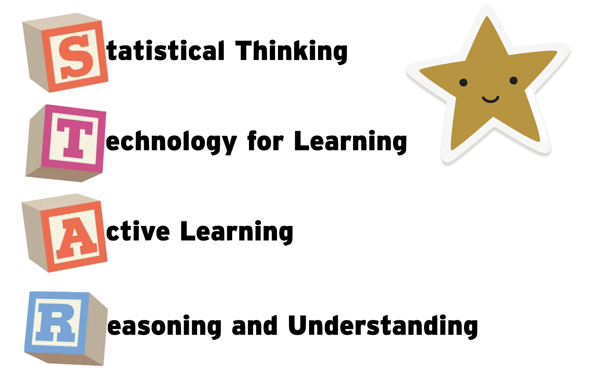

Session Description
An overview of statistics education research including historical and current perspectives and findings. Get information about the primary journals, conferences, and resources. And, learn how this work can inform your teaching.
Suggestions for Teachers
- View the primary goal of your instruction as discovery and application of concepts
- This takes more time than simply teaching calculations
- Focus on core concepts:
- Data, Variation, Distribution, Comparing Distributions, Samples and Sampling, Inference, Covariation
- Use carefully developed activities to promote student reasoning
- Create activities around statistical investigative questions questions that require data/context to answer
- Avoid activities that lead students step-by-step through a list of procedures. Instead, use activities that allow students to discuss and think about the data and the problem.
- Have students make conjectures and then implement technology to test those conjectures
- Build on students’ intuitive notions
- Research has found a spectrum of students’ conceptions about statistical content
- Students will be in transition from their colloquial understanding to more statistical understandings
- Integrate active learning
- Engage students in collaboration, interaction, discussion
- Instructors might need to facilitate this process with guided practice
Suggested Reading List (in alphabetical order by author)
Abstract: The statistical problem-solving process is key to the statistics curriculum at the school level, post-secondary, and in statistical practice. The process has four main components: formulate questions, collect data, analyze data, and interpret results. The Pre-K-12 Guidelines for Assessment and Instruction in Statistics Education (GAISE) emphasizes the importance of distinguishing between a question that anticipates a deterministic answer and a question that anticipates an answer based on data that will vary, referred to as a statistical question. This article expands upon the Pre-K-12 GAISE distinction of a statistical question by addressing and identifying the different types of statistical questions used across the four components of the statistical problem-solving process and the importance of interrogating these different statistical question types. Since the publication of the original Pre-K-12 GAISE document, research has helped to clarify the purposes of questioning at each component of the process, to clarify the language of questioning, and to develop criteria for answering the question, “What makes a good statistical question?”
Abstract: GAISE II presents a vision where every individual is confident in reasoning statistically, making sense of data, and knowing how and when to bring a healthy skepticism to information gleaned from data. Presented here is a framework of essential concepts and 22 examples across the three levels of skills development. This framework supports all students as they learn to appreciate the vital role of statistical reasoning and data science and acquire the essential life skill of data literacy.
Abstract: In this paper, we develop a personal synthesis of the most outstanding research on the teaching and learning of probability in the past years. We conducted a systematic search to examine publications on this topic in mathematics education, statistics education, education, and psychology journals. This exploration was complemented by additional studies published in conference proceedings or books. We classified these papers to highlight the main recent research tendencies in the field, according to the theme studied and considering the research objectives. Epistemological analyses suggest that informal inference based on simulation diminishes the topic abstraction but reduces probability to its frequentist view. Topics receiving particular attention include children’s probabilistic knowledge, the effect of visualizations on solving conditional probability problems, teachers’ education and probability modelling. In the final section, we recommend relevant points in which more investigation is needed to complete our knowledge about teaching and learning. In particular, we miss research on teachers’ mathematical knowledge of many probability concepts and on their didactic knowledge.
Abstract: When experienced analysts explore data in a rich environment, they often transform the dataset. For example, they may choose to group or filter data, calculate new variables and summary measures, or reorganize a dataset by changing its structure or merging it with other information. Such actions background, highlight, or even fundamentally change particular features of the data, allowing different types of questions to be explored. We call these actions data moves. In this paper, we argue that paying explicit attention to data moves, as well as their purposes and consequences, is necessary for educators to support student learning about data. This is especially needed in an era when students are expected to develop critical literacy around data and engage in purposeful, self-directed exploration of large and often complex datasets.
Abstract: Research in the areas of psychology, statistical education, and mathematics education is reviewed and the results applied to the teaching of college-level statistics courses. The argument is made that statistics educators need to determine what it is they really want students to learn, to modify their teaching according to suggestions from the research literature, and to use assessment to determine if their teaching is effective and if students are developing statistical understanding and competence.
- Konold, C. & Harradine, A. (2014). Contexts for highlighting signal and noise. In T. Wassong, D. Frischemeier, P. R. Fischer, R. Hochmuth, & P. Bender (Eds.), Mit werkzeugen mathematik und stochastik lernen: Using tools for learning mathematics and statistics (pp. 237–250). Springer. [Available here]
Abstract: During the past several years, we have conducted a number of instructional interventions with students aged 12–14 with the objective of helping students develop a foundation for statistical thinking, including the making of informal inferences from data. Central to this work has been the consideration of how different types of data influence the relative difficulty of viewing data from a statistical perspective. We claim that the data most students encounter in introductions to data analysis—data that come from different individuals—are in fact among the hardest type of data to view from a statistical perspective. In the activities we have been researching, data result from either repeated measurements or a repeatable production process, contexts which we claim make it relatively easier for students to view the data as an aggregate with signal-and-noise components.
Wild, C. J., & Pfannkuch, M. (1999). Statistical thinking in empirical enquiry. International Statistical Review, 67(3), 223–248. https://doi.org/10.1111/j.1751-5823.1999.tb00442.x [Available here]
Abstract: This paper discusses the thought processes involved in statistical problem solving in the broad sense from problem formulation to conclusions. It draws on the literature and in-depth interviews with statistics students and practising statisticians aimed at uncovering their statistical reasoning processes. From these interviews, a four-dimensional framework has been identified for statistical thinking in empirical enquiry. It includes an investigative cycle, an interrogative cycle, types of thinking and dispositions. We have begun to characterise these processes through models that can be used as a basis for thinking tools or frameworks for the enhancement of problem-solving. Tools of this form would complement the mathematical models used in analysis and address areas of the process of statistical investigation that the mathematical models do not, particularly areas requiring the synthesis of problem-contextual and statistical understanding. The central element of published definitions of statistical thinking is “variation”. We further discuss the role of variation in the statistical conception of real-world problems, including the search for causes.
Resources, Journals, Books, and Conferences for Statistics Education Resources and Research
Resources
Statistics Education Web Hubs
Research-Oriented Journals
Practitioner/Teaching-Oriented Journals
Books on Learning and Assessment [All are Open-Access]
- National Research Council. (1999). How people learn: Bridging research and practice. Washington, DC: The National Academies Press. https://doi.org/10.17226/9457
- National Academies of Sciences, Engineering, and Medicine. (2018). How people learn II: Learners, contexts, and cultures. Washington, DC: The National Academies Press. https://doi.org/10.17226/24783
- National Research Council. (2005).* How students learn: History, mathematics, and science in the classroom.* Washington, DC: The National Academies Press. https://doi.org/10.17226/10126
- National Research Council. (2001). Knowing what students know: The science and design of educational assessment. Washington, DC: The National Academies Press. https://doi.org/10.17226/10019
Books to Connect Research and Statistics Teaching
- Batanero, C., Burrill, G., & Reading, C. (Eds.) (2011). *Teaching statistics in school mathematics—Challenges for teaching and teacher education: A Joint ICMI/IASE Study: The 18th ICMI Study. Springer. https://doi.org/10.1007/978-94-007-1131-0
- Ben-Zvi, D., Makar, K., & Garfield, J. (Eds.) (2018). International handbook of research in statistics education. Springer. https://doi.org/10.1007/978-3-319-66195-7
- Garfield, J., & Ben-Zvi, D. (2008). Developing students’ statistical reasoning: Connecting research and teaching practice. Springer. https://doi.org/10.1007/978-1-4020-8383-9
Conferences